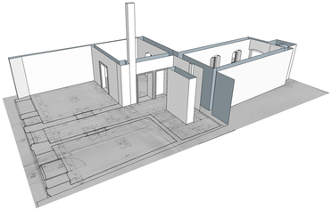

Bývalý stav obce Přísečnice a jejího okolí byl zkoumán na Císařských otiscích mapy stabilního katastru v měřítku 1 : 2 880 z roku 1842 (zkr. CO), dále pak ve Státní mapě 1 : 5 000 z roku 1953 (zkr. SMO-5). Současná situace byla prezentována souborem vektorových dat Základní báze geografických dat České republiky (zkr. ZABAGED®) a pomocí ortofotomapy. Tyto mapy a data byla převzaty z Českého úřadu zeměměřického a katastrálního. Situační plán centra obce 1 : 500 a stavební plány a řezy některých budov byly získány z Národního památkového ústavu v Ústí nad Labem, dobové fotografie a pohlednice byly převzaty z internetových stránek zaniklých obcí a objektů v České republice - www.zanikleobce.cz. Former status of the town Přísečnice and its surroundings has been studied on imperial imprints of the Stable cadastre maps in the scale 1 : 2 880 from the year 1842 (CO), state map 1 : 5 000 from the year 1953 (SMO-5). Present-day situation has been represented by a set of vector data of the Fundamental Base of Geographic Data of the Czech Republic (ZABAGED®) and by orthophoto. The maps/data were provided by the Czech Office for Surveying, Mapping and Cadastre. Site plan of the town centre 1 : 500 and construction plans and section views of some municipal buildings were obtained from the National Heritage Institute in Ústí nad Labem, period photos and postcards were taken from the website of extinct villages and objects in the Czech Republic – www.zanikleobce.cz.
Při zpracování byl použit produkt společnosti ESRI ArcMap 10 pro georeferencování a vektorizaci mapových podkladů. Digitální model terénu centra obce a modely budov byly vytvořeny v programu SketchUp. Opensource knihovna THREE.js a Unity engine byly použity pro internetovou vizualizaci modelů. Správa, editace a prohlížení obrazových materiálů byla provedena v programu XnView. In data processing, the ESRI product ArcMap 10 was used for georeferencing and vectorizing. The digital terrain model of the town centre and models of buildings were formed in the SketchUp program. Opensource library Three.js and game engine Unity were used for internet visualization of models. Managing, editing and viewing of video materials were done in XnView program.
Prvním krokem zpracování dat bylo nastavení souřadného systému (Systém jednotné trigonometrické sítě katastrální: S - JTSK) mapových listů pomocí georeferencování. Listy SMO-5 byly georeferencovány pomocí souřadnic S - JTSK. Jednotlivé listy SMO-5 byly transformovány pomocí polynomické transformace 2. řádu na rohové body vektorizovaných polygonů mapových listů a také na střední body mapového rámu. The first step of data processing was a georeferencing of map sheets into the Czech national co-ordinate system S-JTSK. Map sheets of the State map (SMO-5) were georeferenced using the S-JTSK coordinates of the map layout. Individual sheets of SMO-5 were transformed with 2nd order polynomial transformation on the corner points of the underlying polygons (map sheets layout) and also to middle points of the map frame.
Listy císařských otisků map stabilního katastru byly georeferencovány na mozaiku vytvořenou z SMO-5 pomocí transformaci Spline. Identické body byly voleny na styku dvou listů, na hranici pozemků a v rozích budov. V krajních případech byly body vybrány také na křižovatkách silnic nebo na okraji vodních toků. Počet identických bodů se pohyboval v intravilánu okolo 70 a v extravilánu okolo 30. The sheets of imperial imprints of Stable cadastre maps were georeferenced on the SMO-5 mosaic using the spline transformation method. Identical points were chosen at the intersection of two sheets, at the boundary of plots and in the corners of buildings. If necessary, the points were selected also at the crossing of roads or the edge of the water flow. The number of identical points was 70 in the urban area and about 30 in rural area.
Použitý plán středu města byl naskenován ručním skenerem, jednotlivé soubory byly uloženy do formátu *.jpg s rozlišením 300dpi. Naskenované části byly pořízeny s dostatečným překryvem, které umožnilo následné georeferencování. Rastrové soubory byly georeferencovány pomocí transformace Spline pomocí map pozemkového katastru ze 30. let 20. století, které byly k dispozici jako mapová služba běžící na ArcGIS serveru Laboratoře geoinformatiky na Univerzitě J. E. Purkyně v Ústí nad Labem. Identické body byly voleny především v rozích budov. The site plan of the town centre was scanned using a handheld scanner. Individual files were saved in JPEG format with a resolution of 300dpi. Scanned sections were taken with sufficient overlap suitable for georeferencing. Raster files were georeferenced by a spline method on the Land cadastre maps from the thirties of the 20th century available as a map service running on the ArcGIS Server of the Laboratory of Geoinformatics at the J. E. Purkyně University in Ústí nad Labem. Identical points were chosen mainly in the corners of buildings.
Po ukončení georeferencování byly zpracované mapové listy uloženy do mozaiky. Mozaiky z SMO-5 a CO byly vektorizovány a použity pro analýzu využití ploch. To obtain continuous map layers, the processed map sheets were saved as a mosaic files. Then, the areas of land use categories have been vectorized on the CO and SMO-5 maps.
|  |
| Ukázka modelování budovy Demonstration of modeling of the building |
Digitální model terénu (DMT) centra obce byl vytvořen v programu SketchUp 2013 pomocí funkce From Contours a vektorizovaných vrstevnic, které byly získány z plánu obce 1 : 500 z roku 1972. DMT byl pak použit jako podklad pro modelování budov a kompletní vizualizaci. Digital terrain model (DTM) of the town centre has been created in the SketchUp 2013 program by the function From Contours, using vectorized contour lines from the Site plan of the town center 1 : 500 from the year 1972. The DTM then served for generating background levels for modeling of buildings and for complete visualization.
Před vlastním modelováním bylo nutné roztřídit jednotlivé budovy do dvou skupin podle dostupnýnch údajů: první skupina obsahovala fotografie a pohlednice bývalých budov, v druhé pak byly budovy s dostupnými stavebními plány. Všechny modely budov byly vytvořenz pomocí aplikace SketchUp 2014. Pro budovy s podklady v první skupině bylo nutné před modelací získat půdorysy včetně převýšení z digitálního modelu terénu (DMT). Tento krok byl důležitý pro vizualizaci modelu budovy v rámci DMT. U těchto modelů byla vytvořena pouze jedna nebo dvě fasády. Modely, které vznikaly podle stavebních plánů, byly vytvářeny s rovným půdorysem a jsou plnohodnotným modelem stavby. Budovy mají vymodelovány všechny obvodové stěny a interiér. Before modeling of individual houses it was necessary to sort the objects in two groups according to available data: the first group involved photographs and postcards of former buildings, while in the second group there were the buildings with available construction plans. Models of buildings were generated with SketchUp 2014. For the first group it was necessary to derive ground plans including height difference from a digital terrain model. This step was important for visualization of modeled buildings on the DTM. In these models, only one or two facades have been created. The models created from building plans were constructed on a horizontal ground plan, as complete models of the buildings – for these objects it was possible to model all outer walls and some interior details, too.
Při modelaci z fotografií bylo prvním krokem odhadnutí přibližné výšky stavby. Ta byla odhadnuta pomocí předmětů, jejichž výška byla známá (např. popelnice). Následovalo modelování obvodových stěn pomocí funkce Push/Pull vytažením půdorysu do požadované výšky. Do stěn pak byla přidána vymodelovaná okna, dveře a římsy. Dalším krokem bylo dokreslení střechy, vikýřů a komínů. Posledním krokem bylo přiřazení barev a textur. Při modelaci ze stavebních plánů se postupovalo obdobně. Celý plán byl zobrazen v programu SketchUp a pak následně „obkreslen“. Tím byl získán rozměrově přesný korpus modelu, který byl doplněn o podrobnosti. For modeling from photos it was important to estimate the approximate height of the building using objects with known height (e.g. dust bins). By the Push / Pull function the external walls were constructed to the desired height and then the doors, windows and cornices could be added. The next step was to depict roofs, dormers and chimneys. Finally, colors and textures were assigned to object elements. The process of modeling from building plans was similar: the plan was displayed in the SketchUp program and then depicted by "tracing". This provided a dimensionally accurate corpus of the model which has been accompanied by details.
Prohlídka se ovládá pomocí myši: The sightseeing is controlled by mouse:
Otáčení modelem: levé tlačítko myši Rotating the model: left mouse button
Posouvání modelu: pravé tlačítko myši Movement to the model: right mouse button
Příblížení / oddálení: střední tlačítko myši, kolečko myši Zoom: middle mouse button, mouse wheel
Pohyb dopředu a zpět: šipky "nahoru" a "dolu" nebo klávesy "w" a "s" Forward and back movement: cursor arrow "up" a "down" or keys "w" a "s"
Pohyb do stran: šipky "vlevo" a "vpravo" nebo klávesy "a" a "d" Movement to the sides: cursor arrow "left" a "right" or keys "a" a "d"
Otáčení kamery: "pohyb myší" Rotating the camera: "mouse movement"
Skákání (překonávání překážek): "mezerník" Jumping: "space"